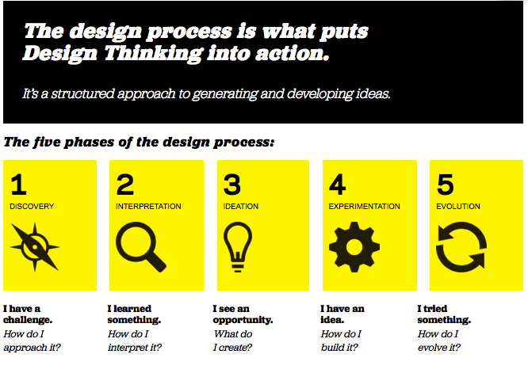
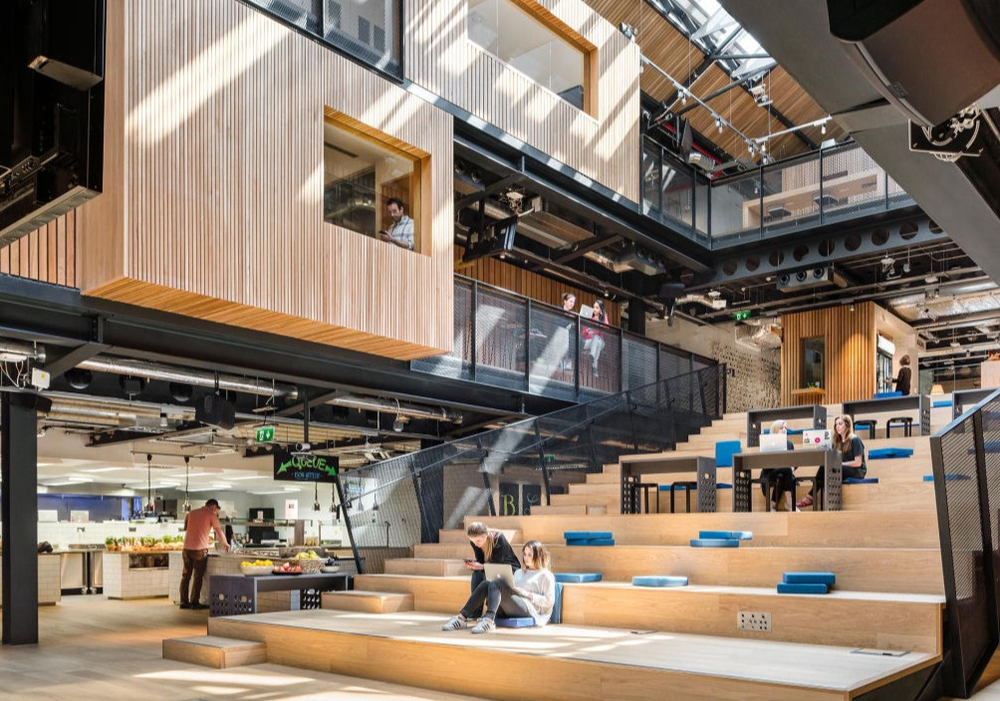

AI Website Creator以人为本的创造与迭代思维 —— 教师与设计师的职业共通性
在古埃及与美索不达米亚（公元前3000年左右） 教师为“书记官”，负责教导文字、数学与行政技能；教育主要服务于贵族与官僚。
古希腊（公元前500年左右） 教师（Didaskalos）负责哲学与修辞教学，苏格拉底提出“启发式教学法”，强调思辨。
古中国（公元前500年左右） 孔子倡导“有教无类”“因材施教”，确立教师为“道德与学问的引导者”。
古印度与伊斯兰世界 教师（Guru / Mullah）承担宗教与学术双重责任。
教师：以学生需求为中心，关注学习动机与心理体验。
设计师：以用户需求为导向，关注使用者的痛点与体验。
两者的目标一致：理解人、解决问题、创造意义。
教师 设计师
-因材施教 -用户调研
-学习动机分析 -用户情绪与痛点分析
-设计学习活动 -设计用户体验流程
问题（Problem）：
传统课堂缺乏创造力，教师难以培养学生创新能力。
方案（Solution）：
IDEO 与斯坦福大学合作，培训教师应用“设计思维”
-观察学生行为 → 发现真实学习痛点。
-原型课程设计 → 小范围测试教学方法。
-收集反馈 → 优化课程与教学流程。
结果（Result）：
学生项目完成率提升 65%。
教师课堂满意度从 70% → 92%。
模型推广至 20+ 国家、500+ 学校。
🎯 教师开始像设计师一样，设计“学习体验”而不是仅传授内容

问题（Problem）：
Airbnb 设计团队在全球扩张后出现设计质量不一致、新人融入慢的问题。
方案（Solution）：
设计总监 Alex Schleifer 创建 Airbnb Design Academy
* 建立内部“教学式学习系统”，资深设计师担任导师。
* 定期分享案例、复盘失败项目。
* 收集反馈与数据，持续迭代学习课程。
结果（Result）：
* 新设计师上手时间缩短 50%。
* 用户体验一致性提升 23%。
* Airbnb 被《Fast Company》评为“最具学习文化的设计组织”。
💼 当设计团队引入“教育思维”，学习与创新形成良性循环。

AI Website Creator